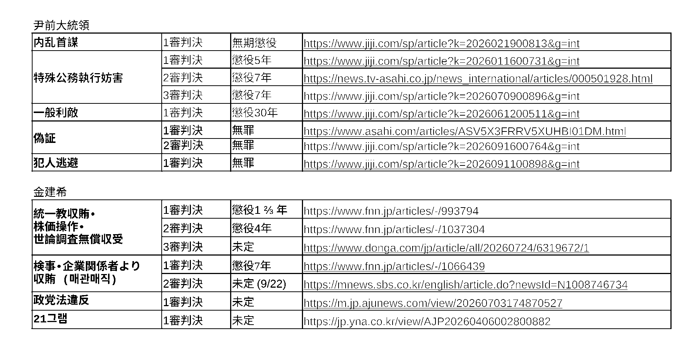
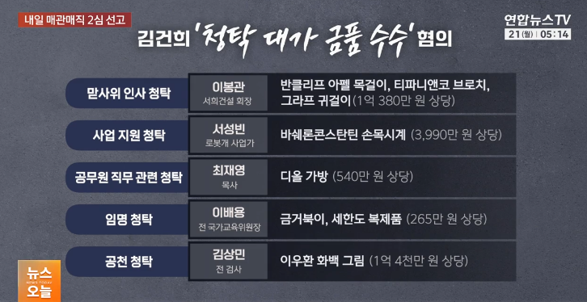

26. 9. 22
14:44: 判決文の各部分についての実況の記事は出てきています。(以前も述べたようにこれは「1回表、大谷1安打」のような記事です)
[속보]2심 "김건희 '바쉐론 시계' 수수, 사업 청탁 단정 못 해"
https://mobile.newsis.com/view/NISX20260922_0003800383
14:37: 皆様も金建希の宣告公判について調べてみて下さい:
https://anissatta.github.io/home-project/kim/
14:36: 先のニュースは朝鮮日報にも出ていました:
https://www.chosun.com/national/court_law/2026/09/22/FXF2B6W3XNDSZHEYKD7TZXH2EA/
14:33: 仕方ないので先の作業の続きを行います。
http://weekly.chosun.com/news/articleView.html?idxno=51090
https://www.chosun.com/national/court_law/2026/06/26/7LKAKRLWCNFF3EO6WBSJMVHM6Q/
14:26: Newsisの速報ニュースにはまだ金建希の宣告公判についての記事が出ていないようですが、代わりにこれを見つけました:
[속보]靑, 조희대 '재제청 거부'에 "깊은 유감…헌법 위배되는 인식"
https://mobile.newsis.com/view/NISX20260922_0003800162
皆様が最近話題になった「涙の金建希」と誤解されたかも知れない写真は下記の通り4月のものです。
http://weekly.chosun.com/news/articleView.html?idxno=50645
下記に朝鮮日報に出ている写真をいくつか挙げてみます。(ちなみに김건희(金建希)と同姓同名のプロ野球選手(金乾𠘕)もいますが、韓国ではこういった事は普通にあり得ます) このように実際に公開されている映像は僅かであり、それを何度も再利用しています。
https://www.chosun.com/national/court_law/2025/09/24/RBHQIIL26VFUXOFVKX2ZCFE554/
https://www.chosun.com/national/court_law/2025/10/15/R5HVXSWNUVAV7JGJSTGGKHB3E4/
https://biz.chosun.com/topics/law_firm/2025/10/22/7XTLARK73NFCRDRLSRCKX7YJCE/
https://www.chosun.com/national/court_law/2025/10/27/PJ7S7TD3G5D6FO2DKG6COLJ7GA/
http://weekly.chosun.com/news/articleView.html?idxno=45782
https://www.chosun.com/national/court_law/2025/11/05/CYZUAPXQVBFM3BV6R2SHNGEJBI/
https://biz.chosun.com/topics/law_firm/2025/11/07/RUDD7KAYV5AZ3J3K3KFQL7MCQM/
https://www.chosun.com/national/court_law/2025/11/11/DGQCCBJ6HFFNLIPZTS37JDZG34/
https://www.chosun.com/national/court_law/2025/11/12/MCKMUOA3LNDYFF62S72IKEWHC4/
https://www.chosun.com/national/court_law/2025/11/14/RYHXQTHGKRBXTEA2SEJGE6JSNY/
http://weekly.chosun.com/news/articleView.html?idxno=46150
https://www.chosun.com/national/court_law/2025/11/26/5AJUJ3LGEVD4PBAJAVLPQM7IZQ/
https://www.chosun.com/national/court_law/2025/12/03/ZL3DNEPF2FCCPCPUNAO7NVYSMY/
https://biz.chosun.com/topics/law_firm/2026/01/28/MDPZKBS6UVA5FCCDGQCUWXFGIE/
現在日本でどのような噂が流れているのかは分かりませんが、もし「今日の宣告公判が生中継されない訳がない」という噂でしたら韓国を旅行中の方はまずテレビをご覧になって下さい。(KBSはそういった場合に公判の映像を放映するはずです) 下記の写真は1審判決時のものですが、연합뉴스TV(ケーブルテレビチャンネルの一つ)が放送する判決についてのニュース映像を人々がテレビを通して見ています。
(6. 26) [1보] 김건희 '매관매직' 혐의 1심 징역 7년 선고
https://www.yna.co.kr/view/AKR20260626123600004
また以前ジーンズを穿いてmukbangを行った後よく分かりませんが、そのような食事の映像を通して私が日本人を惹きつけようとしているといった噂が流れたようなので今回は作業ズボンにし今朝使用した香港映画のシーンにあったように蝋燭を手にしたりしています。私がどのようなズボンを履いたとしても例の「知恵遅れの大ちゃん」の噂が強化されるのは分かっているのですが、私が金建希のことが好きではないと伝えるのにこれが役立つと思ったのでmukbangをしました。
皆様が今度韓国に旅行される際にホテルの(ケーブル)テレビのチャンネルを確認して頂きたいのですが、恐らく日本の方がご存知である韓国の報道社は朝鮮日報(The Chosun Daily)ぐらいだと思いますので、今日の2審宣告公判ではなく金建希の別の事件の最高裁判決についてのこれまでの流れを朝鮮日報(The Chosun Daily)を使って説明してみます。恐らく記事Aにある「(当初の日程から7月24日に延期されていた)最高裁判決が中継される」といった内容の報道を皆様も何らかの形でご覧になったかと思います。(下記はAIが翻訳したとの但書があるので若干おかしい可能性があります) ただその判決予定日の前日である7月23日に、記事Bにあるように最高裁がこれを全員合議体(full bench)に回付したので7月24日の公判は延期されたのです。全員合議体というのは恐らく日本でいう大法廷のようなものだと思います。今日これとは別の事件について2審判決が出ますが、最高裁が審理している事件についてはまだ進捗が見られません。(この2つの事件が日本ではいずれも「あっせん収賄事件」として表記されていることは既に述べました。ただ金品を提供した主体が異なりますので、記事をよく読んで下さい)改めて述べるまでもなく、金建希に対する最高裁判決が出れば日本の新聞社やテレビ局、日本語のネットニュースも必ず報じるはずです。(それは判決が無罪であっても同様です)
記事A (7. 15)
https://www.chosun.com/english/national-en/2026/07/15/QO5VP6ZIOJCTVHSZ6JBRCWALGA/
記事B (7. 23)
https://www.chosun.com/english/national-en/2026/07/23/725LLK2F4NFM3NRUGQXLB556NY/
今日は判決や判決に関する映像が出てから夕食をとりますが、遅くなるのは確実ですので昼食も普段より遅くとることにします。
これと誤解されている方もいそうです。(裁判長の指示によりマスクを外しています)
(2026/4/13) 金建希が被告人として出席した公判
https://youtube.com/shorts/hFzLnjtKMao
先のYTNの映像を見て気付いたことですが、最近話題になっていた「金建希が매관매직事件の2審結審公判で涙を流しながら何かを訴えた」という場面というか、この매관매직事件の2審結審公判自体が映像としては公開されていないのです。このYTNの映像に出てくる1審宣告公判時の映像をそれと誤解されておられる方もおられるでしょうが、下記をご覧になれば解決するかと思います。
(2026/6/26) 賣官賣職事件 1審 宣告公判
https://youtube.com/shorts/GYMaM3t99Eg
下記は今日の宣告公判についての記事(映像)ですが、これを用いて改めて下記を確認しておきます。
1) 被告人は金建希である
2) 今回のが2審(항소심)判決である
각종 청탁과 함께 고가의 금품을 받은 혐의를 받는 김건희 씨에 대한 항소심 선고가 오늘 오후 내려집니다.
3) 1審判決は懲役7年だった
1심은 징역 7년을 선고한 가운데, 항소심 재판부가 어떤 결론을 내릴지 관심입니다.
4) 午後2時に宣告公判がスタートする
김건희 씨에 대한 항소심 선고는 오늘 오후 2시 서울고등법원에서 진행됩니다.
5) 金建希に金品を与えた人物らに対する判決は午後4時以降に下される(法律新聞の週間日程にあったのはこれだと思います)
재판부는 김건희 씨에 대한 선고는 오후 2시, 다른 금품 제공자들에 대한 선고는 오후 4시로 분리 진행하기로 했습니다.
6) 1審では宣告公判(선고 공판)の全過程を生中継したが、今回の2審宣告公判は生中継を許可せず、判決後に録画した映像が提供される
앞서 1심 재판부는 선고 공판 전 과정을 생중계했지만, 2심 재판부는 생중계는 불허하고 대신 녹화 본을 선고 이후 제공하기로 결정했습니다.
7) 金建希の今回の事件の容疑は大統領夫人であるという点を利用して金品とともに人事請託を受けたというものだが、その内容は多岐にわたっている(つまり判決文はかなり長くなるはずです)
김건희 씨는 남편이 대통령이라는 점을 이용해 금품과 함께 인사청탁을 받은 혐의가 적용됐는데, 목록도 금액도 꽤 많습니다. 먼저, 이봉관 회장에게 지난 2022년 맏사위 인사 청탁과 함께 반클리프 아펠 목걸이, 티파니 브로치, 그라프 귀걸이 등 1억 원이 넘는 귀금속을 수수한 혐의를 받고 있습니다. 또 지난 2022년에는 이배용 전 국가교육위원장에게 265만원 상당의 금거북이와 세한도 복제품을, 로봇개 사업가에게는 3천 9백만 원 가량의 바쉐론콘스탄틴 손목시계를 받은 혐의도 적용됐습니다. 특검은 또, 김건희 씨가 최재영 목사에게 청탁과 함께 540만원 상당의 디올 가방, 그리고 지난 2023년 김상민 전 검사에게 1억 4천만원 가량의 이우환 화백 그림을 받았다고 판단해 모두 기소했습니다.
宣告公判の開始は午後2時からですが、判決の主文が読み上げられるのは宣告公判の末尾になります。下記は同じ事件の1審宣告公判の映像ですが、今回もかなり時間がかかるものと思われます。
https://youtu.be/HLbxzSJ6gNY
현대판 '매관매직' 김건희 항소심 오늘 선고..1심은 징역 7년
https://m.ytn.co.kr/news_view.php?key=202609220844238195
下記にある通り昨日김성수大法官の任命式があったようです。ここには記載がありませんが、これで大法官の欠員は1名となります。
이 대통령, 김성수 대법관에 임명장…조희대와 차담
https://m.yonhapnewstv.co.kr/news/MYH20260922051047B6G
ここにある通り昨日任命された김성수大法官はその2週間前に退任した이흥구の後任です。노태악の後任はまだ決まっていないので現在欠員は1名です。
(9. 7) 대법관 2명 공석 현실화‥조희대는 오늘도 침묵
https://imnews.imbc.com/replay/2026/nwdesk/article/6850182_37004.html
下記はNewsisの裁判スケジュールですが、これによると今日の金建希の2審(항소심)宣告公判はソウル高裁(서울고법; 고법は고등법원の縮約語です)で午後2時(오후 2시)始まるそうです。ただ昨日述べたように公判の映像は判決が出てから録画したものが公開されます。宣告公判開始から判決まではかなり時間がかかることがありますので、皆様もそれを念頭に置いておいて下さい。
오후 2시 '특정범죄 가중처벌법상 알선수재 혐의' 김건희 여사 외 3명 항소심 선고기일, 서울고법 형사15-3부, 311호
[오늘의 주요일정]법조(9월22일 화요일)
https://mobile.newsis.com/view/NISX20260921_0003798965
오늘 김건희의 매관매직 사건 2심 선고 공판이 진행되는데 이번은 녹화 중계이고 선고가 내린 후에 영상이 난다니까 식사 시간 등을 이에 따라 조정해 봅니다. 다만 마르야스에는 역시 오전 9시경에 가기로 합니다.
26. 9. 21
PPS: 「録画中継」されるそうです。「다만, 선고 장면은 실시간 생중계가 아닌 녹화 형식으로, 선고 이후 영상이 공개될 예정입니다」とあるようにリアルタイムではなく宣告後に録画映像が出るらしいです。
내일 진행되는 김건희 씨의 이른바 '매관매직' 의혹에 대한 항소심 선고가 녹화 중계됩니다. 서울고법 형사 15-3부는 내일 오후 2시 열리는 김 씨의 알선수재 혐의 항소심 선고에 대한 '김건희 국정농단' 특검의 중계 신청을 허가했습니다. 다만, 선고 장면은 실시간 생중계가 아닌 녹화 형식으로, 선고 이후 영상이 공개될 예정입니다. 앞서 김 씨는 윤석열 전 대통령 취임 전후 서희건설 이봉관 회장과 이배용 전 국가교육위원장 등으로부터 각종 청탁을 대가로 3억 원 가까운 금품을 받은 혐의로 1심에서 징역 7년을 선고받았습니다.
내일 김건희 '매관매직' 항소심 선고 녹화 중계
https://imnews.imbc.com/news/2026/society/article/6853338_36918.html
PS: 明日の宣告公判についての中継申請は許可されるとは思いますが、それについての記事はまだ出ていないようです。私は韓国の報道社がどうしてこんなことをしているのか分からなくもありません。(あたかも私がそれを皆様に伝えるのを嫌がっているように見えるからです) あと明日2審判決が下る事件は1審で既に懲役7年が出ていますから、日本の方々が期待されているような無罪はあり得ないと思います。(韓国の方々が想像する日本人というのは「尹アゲイン」的な極右だと思います)
오늘 밖에서 인도인이나 네팔인 같은 분을 봤는데요 아마 지금 그로네코 야마토 간사이 게이트웨이에 있는 사람들이 소문을 내고 있을 가능성도 있게 보입니다. 그 일본 사람은 파견 사원이 아니라 그로네코 야마토가 직접 고용한 종업원이니까 우리가 받은 손해는 그 회사가 배상해야 하는데요. 그런데 아시는 바와 같이 저는 아마존에 있었을 땐 더 많이 술을 마시고 있었지만 당신이 걱정하실 수도 있으니까 깡통을 부엌에 내지 않았습니다. 어쨌든 그들은 제가 마지막에 당신과 만날 수도 있다는 점을 기억하지 않으면 반드시 지옥을 볼 거예요~
未だにゴミのような噂を流す方がおられるのは、日本で金建希のことや韓国でのこの方の評価について理解されていないからだとも思われます。下記は尹前大統領が逮捕された頃に描かれた漫画だと思いますが、1コマ目で「これで少し安心して寝れるわ〜」と呟いているこの方は3コマ目で「ところで金建希は?」と何かをチェックしようとされています。
https://www.hani.co.kr/arti/cartoon/hanicartoon/1178341.html
意図はよく分かりませんが、これには조(曺)희대大法院長と尹前大統領が描かれています。
https://www.hani.co.kr/arti/cartoon/hanicartoon/1220127.html
これは拘置所にいる金建希です。
https://www.hani.co.kr/arti/cartoon/hanicartoon/1243169.html
金建希の言動には同情を誘って刑を軽くしたいという意図がありますが、日本の方々は愚直にそれを解釈されているかと思います。
https://www.hani.co.kr/arti/cartoon/hanicartoon/1211971.html
非常戒厳は金建希への捜査を防ぐ為のものだったと解釈出来なくもありませんが、それについて反省や尹前大統領に対する申し訳なさのような感情は無いようです。
https://www.hani.co.kr/arti/cartoon/hanicartoon/1212192.html
尹前大統領の在任中に下記のような風刺画を学生が描いたということからも何か察することが出来るのではないかとも思います。
https://www.joongang.co.kr/article/25107374
以前も紹介しましたが、下記のような映画もあります。
下記は以前書いた文章です。
[속보]종합특검, ‘김건희 도이치 무혐의’ 전 서울중앙지검장 등 검사 5명 기소
https://www.khan.co.kr/article/202608201224011
https://m.news.nate.com/view/20260820n16206
ちなみに1審で金建希の株価操作容疑を無罪としたソウル中央地方地裁の判事らは今日このように起訴されたのですが、同じ事件の2審でこの株価操作容疑を有罪と認定したソウル高裁の申宗旿(신종오 / シン・ジョンオ / Shin Jong-oh)判事は裁判所の庁舎内で不審な死を遂げています。私はこれがずっとおかしいと思っていましたが、今日のソウル中央地方地裁の判事らが起訴されたという記事を読んでやはり何か恐ろしく汚れたものが韓国の司法に影響を及ぼしているのではないかと思いました。
金建希夫人の二審で一審より重い判決言い渡したソウル高裁判事（55）、遺体で発見
https://www.chosunonline.com/m/svc/article.html?contid=2026050680064
日本の皆様は分からないでしょうが、韓国の方々が面白がって私が金建希が好きだといった噂を流しているのだとしたら、それは韓国で金健希が好きだという事が一般的にかなり致命的になるからだと思います。韓国と日本とでは考え方が違うのですから(竹島は独島ですし、韓国の固有領です)、皆様の想像で何もかも決めつけて勝手に噂を流さないで下さい。同じことは以前中日関係についても述べました。
(外出中) 少し離れたところにあるコノミヤにこれから寄って何か買います。
あまりに迫害がひどいので過去に書いた文章を再掲します:
皆様に確認して頂きたいのはそういった方が噂を流す際に皆様の心身にどのような変調が生じるかということです。私が知る限り、普段温厚な方が突然私に怒鳴りかかって来られたりすることが起こり得ますが、噂が一段落すると元に戻りどうしてそのような事をしたのかご自身でも分からないようです。そういった噂が流れている間に皆様は言いようのない不快感や苛立ちを感じるでしょうが、それらが私に対してではなく皆様の周囲に対してぶつけられることもあるかと思います。同じようなことはこれまでにも何度もあり、しかも噂を流していたのはいつも同一の人物ではありませんでした。まず皆様が覚えている直近の事例を思い出してみて下さい。
あと絆會のことはよく分かりませんが、私が原因で街がヤクザだらけになるようなことはあり得ませんし、そういった人々は世間に溶け込んで目立ったことはしない筈です。昨日から騒音を発したりしているのは近所の子供達か若者だと思います。
韓国や他の地域の方々は信じられないと思われるかも知れませんが、この地域で最近ある虚偽の噂が流されたのはどうも絆會の抗争指定解除と関係があるようなのです。クロネコヤマトの噂を流していた本人を含め皆精神年齢がガキなので、こういったことの対策はガキベースで行わなくてはなりません。どんなに馬鹿馬鹿しいことであっても、ガキが納得しなければ噂は止みません。今日外出したのはその為です。
さっき中継申請についての記事を探してみましたが、まだ裁判所の決定については明らかになっていないようでした。あと大法院宣告の中継申請についての記事がヒットしますが、これは全員合議体に回付される以前のものですから大法院に中継申請が出されたからといってその公判が開かれた訳ではないのです。
阪急オアシスに寄らず、先に部屋に戻ってから下記の文章をアップロードします。(私が半年以上、ほぼ毎日阪急オアシスに行っているのはここが団地の方々が私の生存をチェックするスポットになっているようだからです。私は見知らぬ方々がいい加減な噂を流さないよう出来ることをやっています)
どうして報道がここまで遅れたのか定かではありませんが、明日の宣告公判の中継申請はなされているようです。(裁判所の決定はまだ出ていないようです) またヤマト運輸のごみ人間達が噂を流しているのかも知れませんが、最近は日が昇るのが遅くなおかつ騒音により早く目覚めさせられることが多かったので電灯のある台所で朝食をとっていました。今日も外が騒がしいので散歩がてら外出しますね。外出中はホームページを更新しません。(できません)
내일로 예정된 김건희 씨의 이른바 '매관매직' 사건 항소심 선고를 앞두고 특검 측이 법원에 재판 중계를 요청했습니다. '김건희' 특검은 지난 17일 서울고법에 재판 중계방송 허가 신청서를 제출한 것으로 확인됐습니다.
특검, 김건희 '매관매직' 사건 2심 선고 재판 중계방송 신청
https://imnews.imbc.com/news/2026/society/article/6853228_36918.html
もしかすると韓国で「金建希への最高裁判決は既に出ている」との噂が流れているかも知れません。(フェイクニュース等によりそれが助長されているかも知れないとも思います) 大法院の公式サイトには主要な判決の一覧があります。
https://www.scourt.go.kr/supreme/news/NewsListAction2.work?gubun=4
この11124番の「대법원 2026. 7. 9. 선고 중요판결 요지」を開くとHWPXファイルとPDFファイルへのリンクが表示されますが、このPDFファイルの8ページ(4枚目の右側部分)から14ページまでが尹前大統領の特殊公務執行妨害等の事件に対する最高裁判決についての部分となります。もし金建希の事件に対する最高裁判決が出ているならこの一覧内のどこかにそれがあるはずです。
今朝書いたように現時点で明日の金建希の宣告公判が中継されるかどうかについてのニュースは出ていないようですが、下記に日本の皆様が金建希についてのニュースを探す為のツールを示しますので、Google翻訳等と組み合わせて皆様も調べてみて下さい。
https://news.nate.com/search?q=%EA%B9%80%EA%B1%B4%ED%9D%AC
https://anissatta.github.io/home-project/kim/
これまで開かれた金建希の宣告公判は全て中継されており、その旨が前日には報道社を通して公表されていました。今回のようなことは初めてだと思います。
(2026/1/28) 株価操作等事件 1審 宣告公判
(2026/4/30) 株価操作等事件 2審 宣告公判 (33分あたりでズームアップされます)
(2026/6/26) 賣官賣職事件 1審 宣告公判
https://youtube.com/shorts/GYMaM3t99Eg
朝方から騒がしかったのは私が昨晩作った動画のせいかも知れませんが(該当の動画は既に削除しました)、皆様に分かるように説明するのは困難ですのでとりあえずこの漫画でも見ておいて下さい。
https://www.goodmorningcc.com/news/articleView.html?idxno=450500
https://www.goodmorningcc.com/news/articleView.html?idxno=452244
https://www.goodmorningcc.com/news/articleView.html?idxno=440528
下記の聯合ニュースTVの映像内に明日宣告公判が開かれる金建希の매관매직事件について理解するのに役立つ図解が出てきます。
내일 김건희 ’매관매직’ 2심 결론…오늘은 여인형·이진우 선고
https://m.yonhapnewstv.co.kr/news/MYH20260921053838weI

밖에서 한 소리가 났기 때문에 이런 시각에 일어났습니다. 지금 이 시점에서 특검(특별 검찰)이 법원에 내일 열리는 매관매직 사건 2심 선고공판에 대해 중계 신청을 내거나 법원이 그걸 허가했다는 뉴스 기사는 안 났을 것인데요. 김건희 등의 이같은 공판이 중계될 경우에는 다음과 같은 기사가 반드시 나고 만약 중계되지 않을 경우에는 불허가에 관한 기사가 나거나 아무 가사도 나지 않습니다. 당신도 한번 찾아 보세요. 이런 일이 우리 사랑이나 나라의 운명에 영향을 줄 수도 있을지도 모릅니다. 오늘도 오전 9시경에 마르야스에 갑니다. (이 글을 업로드한 후 다시 자겠습니다)
(6. 23) 법원, 26일 김건희 '매관매직' 1심 선고 생중계 허가
https://www.yna.co.kr/view/AKR20260623077400004
(4. 25) 서울고법, 28일 김건희 2심 선고 생중계 허용
https://www.yna.co.kr/view/MYH20260425002600038
(1. 27) 법원, '주가조작·통일교 금품' 김건희 내일 1심 선고 중계 허가
https://imnews.imbc.com/news/2026/society/article/6796564_36918.html
26. 9. 20
아시는 바와 같이 제가 어제 SIM카드를 산 건 오는 22일에 열리는 김건희의 선고공판에 대비할 필요가 있게 보였기 때문입니다. 그리고 제가 영상을 내기 전에는 대법관 문제 등에 대해 모르던 사람도 있었을 것인데요. 제가 계획한 일은 이런 가운데에 돌연 식사 사진을 내는 걸 통해 두드러진 콘트라스트를 만들고 그 위력으로 소문을 해결하는 것이었는데요 아마 소용없을 것입니다. 일본 사람들은 오는 22일에 김건희의 선고공판이 열리겠다는 것도 모르는 것 같으니 다른 식으로 해석되었을 거예요. 일본 신문사들이 이번에도 김건희에게 내린 판결에 대한 기사를 내지 않을 수도 있지만 영상 등을 내는 것이 좀 효과를 줄 수도 있기 때문에 이번에 인터넷을 고속으로 바꾸는 니트로를 산 건 이런 점에 있어서도 소용있을 것입니다. 그런데 이 니트로란 제가 어제 낸 택시 영화와는 무관합니다. 그 영화 속에선 K라는 글자가 쓰인 인간들을 피하기 위해 한 사람이 택시를 타지만 제가 김건희의 선고공판이나 기즈나회를 피할 필요는 없으니까 안심해 주사길 바라겠습니다.
金建希釈放をイメージ出来ない方は下記を参考にしてみて下さい。私は韓国で조(曺)희대大法院長のことがあまり問題視されていないのだとすれば、日本で高市首相の台湾発言が問題視されないのと同じ理由からかも知れないとも思います。高市首相がゴキブリを愛でるように조(曺)희대大法院長も何かそういったものに感謝しているかも知れません。皆様が私に投影したかも知れない影をそれぞれの持ち主に返さない限り、韓日両国の将来は明るくないでしょう。
https://www.youtube.com/live/BYeYuBSN0_c
(再揭) クロネコヤマトについてもう一度書いておくと、噂を流していたと思われる契約社員(灰色の制服を着た社員)は関西ゲートウェイ(茨木にあるセンター)にて私が派遣社員として夕方から午後10時頃まで働いていた際に、クールでないフロアのA(アルファ)ブロックにいた方です。私が韓国のLeeさんと結婚した場合にどのような仕事をするのかは分かりませんが、場合によってはクロネコヤマトが困ることになるかも知れません。最近気になっているのはクロネコヤマトのドライバーの方々です。恐らく私が買い物等に出かける時刻は把握されていると思いますが、あまりに頻繁に見かけるので本来の業務指示を無視して私を偵察しに来ているのではないかとも思います。
一応昨日の映像等に関連する記事を貼り付けておきます。
デンマーク自治領･グリーンランドめぐり「アメリカが恒久的な管理権」で合意 トランプ大統領が表明 大規模な軍事拠点の整備開始へ
https://newsdig.tbs.co.jp/articles/-/2958872
トランプ氏、中間選挙勝利なら成人に５０００ドル
https://www.jiji.com/sp/article?k=2026091000494&g=int
米、イラン代表団の出席認める 来週の国連総会
https://www.jiji.com/sp/article?k=2026091800208&g=int
トランプ氏、AI開発減速論は「陰謀」と一蹴
https://www.asahi.com/sp/articles/ASV9H21XMV9HUHBI00NM.html
多彩な住宅、施設備えた漁村に／楽園郡浅海養殖事業所が完工
https://chosonsinbo.com/jp/2025/08/30-205/
下記の映像にあるようなことは小さな虫けら達の為に抜け道を作ってやるようなものですが、こういったことが原因で大韓民国という建物自体が崩壊することもあり得る危険性を持っています。ただ恐らく韓国でそのような危機感を持っている方は少ないのではないかとも思います。私はこれまでニュース記事等を通してこのような事を伝えようとして来ましたが、映像の方が伝わるだろうと思いこれらを紹介することにしました。
https://youtube.com/shorts/AF9Gkn7mR1g
明後日開かれる宣告公判の映像が中継(중계)されるかについての報道は今のところ見つかりませんが、皆様も探してみて下さい。今日は日曜日であり法院が機能していないからなのかも知れませんが。
김건희 '매관매직' 2심 모레 선고...1심 징역 7년
https://m.ytn.co.kr/news_view.php?key=202609200923121534
김건희 '매관매직' 2심 선고…'계엄 가담' 군 장성들 1심도 결론
https://mnews.sbs.co.kr/news/endPage.do?newsId=N1008762023
Kim Keon-hee Faces Appellate Ruling on Influence-Peddling Allegations; Military Generals Await Verdicts in Martial Law Trial
https://mnews.sbs.co.kr/english/article.do?newsId=N1008762026
김건희 '매관매직' 2심 선고…'계엄 가담' 軍장성들 1심도 결론
https://www.yna.co.kr/view/AKR20260918190000004
이번주 김건희 '매관매직' 혐의 2심 선고… 군인들 내란 혐의 1심 선고도
https://www.mt.co.kr/society/2026/09/20/2026092009444813485
이번주 김건희 '매관매직' 혐의 2심 선고…1심 징역 7년
https://mobile.newsis.com/view/NISX20260918_0003796041
私についての噂を途中からお知りになった方々も、「あいつがある韓国人の女性と同じアマゾン物流センターで働いておりそこで何があったのかは分からないものの、あいつがインターネットを通してその女性と結婚すると主張した後にこれも経緯は不明だが、ヤクザと関係があるとの噂が流れた為あいつは一旦逃げ、非常に喜劇的な振る舞いをした挙句にやはり結婚するとの立場に戻ったものの、今度はなぜか仕事をしているにも関わらずしていないとか餓死しようとしているとの噂が流れた為にどう考えてもあいつに結婚する意思はないとしか見えない事態が生じた」というこれまでの概略はご存知だと思います。ここで皆様が気になっていたのはやはり「どうしてあいつはヤクザのお嬢と結婚するのに韓国語を使っているのか」といった事だと思います。恐らくこの点については日本だけでなく他の国でも疑問に思われていたようであり、これを覚えておられる方がおられるかは分かりませんが、私が梨泰院惨事が起きる以前にソウル(東大門)を訪問した際に現地の方々は私の頭がおかしいと思われたようでした。私にもよく分かりませんが彼女が韓国人であることは確かですし、皆様がご存知でないアマゾン物流センター内での経緯から彼女がまだ私に好意のようなものを抱かれている可能性は高いと思います。仮に彼女が日本のヤクザのお嬢であった場合に私がヤクザが継ぐ可能性は低いと思いますが(日本のヤクザに世襲制はほとんど無いようです)、私がどうしてもヤクザにならないといけないとの噂が流れていたようですので彼女の実家は韓国のヤクザか何かそういったものなのではないかと想像しています。「アウトレイジ ビヨンド」の映像を紹介したのは外国の方々を含む皆様にこうしたことに対して理解して頂ければと願ってのことです。(Amazonや中古DVD店等でこの「アウトレイジ ビヨンド」を購入することは今でも可能だと思います)
一応映像の典拠も示します。
脳をシェアするシーン
北朝鮮についてのニュース映像
高市首相についての映像
昨日手紙に書いたのはこれのことです。
313,000 “Janfada” for Iran
https://www.tehrantimes.com/news/530150/313-000-Janfada-for-Iran
昨日SIMカードを買いいくつか英語のニュース記事や映画等の映像をアップロードしてみましたが、やはり世間の皆様には理解されなかったようなので今後はこういったことを控えるか、誰が見ても分かるようにします。昨日の分について説明すると米朝対話についてのニューヨーク・タイムズの記事は李在明大統領の政策やホルムズ派兵とも関連するだろうと思って紹介したものです。他のトランプ大統領についての記事は恐らくアメリカの方もご覧になるだろうと思い紹介したものです。夕食時のハンニバル・レクターが調理されたヒトの脳を子供に分け与えるシーンは私の実生活に関するものを比喩的に表したものです。黄色いタクシーのシーンはイランが今週ニューヨークで開かれる国連会議に参加することを表現したものです。その次のこれもタクシーが登場するシーンですが、今朝述べたようにトランプ大統領がAI開発の低速化に反対の立場をとられていることを表しています。楽園ワインのシーンには北朝鮮についてのニュース映像を利用しています。「楽園」という単語は北朝鮮で特別な意味を持つものだと思います。今朝の高市首相が登場する映像は今週行われる米日首脳会談にちなんだものです。
下記は22日に開かれる金建希の宣告公判の傍聴案内です。ここにあるように午後2時スタートです。
2026노1712(특정범죄가중처벌등에관한법률위반(알선수재) 등) 온라인 방청권 추첨 안내
https://slgodung.scourt.go.kr/dcboard/new/DcNewsViewAction.work?seqnum=20892&gubun=41
下記の通り記事にもなっています。
20일 법조계에 따르면 서울고법 형사15-3부(고법판사 성언주 원익선 이희준)는 오는 22일 오후 특정범죄 가중처벌 등에 관한 법률 위반(알선수재) 혐의로 기소된 김 여사의 항소심 선고기일을 연다. 김 여사는 2022년 3월부터 5월까지 이봉관 서희건설 회장으로부터 사업상 도움과 맏사위 박성근 전 국무총리 비서실장의 인사 청탁 명목으로 반클리프 아펠 목걸이, 그라프 귀걸이 등 1억 380만 원 상당의 금품을 수수한 혐의를 받는다. 같은 해 4월과 6월에는 이배용 전 국가교육위원장으로부터 인사 청탁 명목으로 시가 합계 265만 원 상당의 금거북이와 세한도 복제품을 받고, 9월에는 서성빈 드론돔 대표로부터 사업 청탁 명목으로 3990만 원 상당의 바쉐론 콘스탄틴 손목시계를 받은 혐의도 있다. 지난 6월 1심은 김 여사가 받은 금품과 청탁 사이의 대가 관계를 모두 인정하고 징역 7년을 선고했다. 일부 금품의 몰수와 6480만 원의 추징도 명령했다.
'매관매직' 김건희, 22일 항소심 선고…1심 징역 7년[주목, 이주의 재판]
https://www.news1.kr/society/court-prosecution/6295773
22일(화)
서울고법, ‘특정범죄가중처벌등에관한법률위반(알선수재) 혐의’ 등 김건희 여사 외 3명 항소심 선고(오후 2시)
↓ これは明らかに誤入力ですが(時刻以外は上と全く同じですね)、法律新聞がある理由でわざとこのようなデータを入れて人々がこの日程を信用しないようにしているかも知れません。
서울고법, ‘특정범죄가중처벌등에관한법률위반(알선수재) 혐의’ 등 김건희 여사 외 3명 항소심 선고(오후 4시)
(이번주 법조 일정) 9월 21일~9월 25일
https://www.lawtimes.co.kr/news/articleView.html?idxno=226627
下記のナムウィキの記事によれば尹前大統領の内乱首謀容疑に関する裁判は来週10月1日まで開かれないそうです。恐らくこれが今週の日程に尹前大統領の名が出ていない理由だと思います。
12.3 내란/재판/윤석열·김용현·조지호·노상원·김용군·김봉식·목현태·윤승영
https://namu.wiki/w/12.3%20내란/재판/윤석열·김용현·조지호·노상원·김용군·김봉식·목현태·윤승영
一般利敵の方は来週10月2日まで開かれないそうです。
12.3 내란/재판/윤석열·김용현·여인형·김용대
https://namu.wiki/w/12.3%20내란/재판/윤석열·김용현·여인형·김용대
尹前大統領の公判期日を自ら調べたい方は下記のページにある手順を法院名を「서울고등법원」、当事者名を「윤석열」、事件番号を下記の通りそれぞれ置き換えて実行してみて下さい。
- 内乱首謀: 2026노648
- 一般利敵: 2026노1560
https://anissatta.github.io/home-project/kim3/
以前絆会について述べたことが原因で噂が流れたのかも知れませんが、20日で抗争指定が解除されることは新聞にも書かれていましたし、私は彼女は絆会や秋吉連合会とは無関係だと思っています。(そう思う理由については誰も信じないでしょうから書きません)
対立抗争により市民に重大な危害を及ぼす恐れがあるとして、活動が大幅に制限される「特定抗争指定暴力団」に指定されてきた山口組（神戸市灘区）と絆会（大阪府寝屋川市）について、21日から抗争指定が解除される見通しとなった。 両団体の抗争指定は暴力団対策法に基づき、2024年6月以降、3カ月ごとに延長されてきたが、兵庫県公安委員会などは3日、新たな抗争事件などが起きない限り、次の期限（20日）をもって延長しないことを決めた。
(9. 3) 山口組と絆会の「特定抗争指定」解除へ 23年4月以降抗争事件なし
https://www.asahi.com/sp/articles/ASV932TN5V93PTIL00HM.html
저의 추측이 맞다면 한국에도 대법원이 김건희 그리고 한덕수•이상민에 대한 선고를 전원합의체로 회부하면서도 대법관 결원을 이유로 이들에 대한 선고를 무한히 연기했을 뿐만 아니라 그 대법관 결원 문제를 어떻게 해결할지에 대한 입장을 지금까지 밝히지 않고 사법 독립을 이유로 이 문제를 방지하고 있다는 사실을 모르시는 분들이 많이 계실 것입니다. 저는 특히 김건희에 대한 대법원 판결이 내리지 않을 경우에 만약 특검(특별 검찰)이 신청을 내고 법원이 시월 말까지인 김건희의 구속 기간을 더 연장했다고 해도 일간에 김건희가 석방될 수도 있다는 점에 대해선 수많은 여자분들이 화내고 계실 것이라고 상상하고 있었습니다. 그런데 제가 최근에 느낀 건 아마 저의 이 상상이 맞지 않고 지금 한국에선 김건희 석방을 환영하는 사람이 많거나 단지 앞서 말한 바와 같은 사실을 몰라서 김건희가 석방될 리가 없다고 해서 안심하고 있는 사람이 많은 것 같다는 점입니다. 만약 사실 '김건희가 석방될 리가 없다고 해서 안심하고 있는 사람'이 한국 내에 있다면 다음과 같은 이유가 생각나는데요. 첫째로 그런 사람이 '대법원은 이미 김건희에 대해 선고를 냈을 것'이라고 하고 있을 가능성이 있습니다. 지금까지 김건희가 선고 받은 판결은 통일교 금품 수수 등 사건 1심 판결(징역 1년 8개월), 같은 사건 2심 판결(징역 4년) 그리고 매관매직 사건 1심 판결(징역 7년) 이같이 세 가지뿐입니다. 이들이 세 가지일 뿐만 아니라 이 두 사건들이 혼동될 수도 있기 때문에 지난 유월에 내린 매관매직 사건 1심 판결이 전에 내린 다른 사건 판결의 속편 판결로 대법원 판결이라고 오해하신 분도 계실지도 모릅니다. 둘째로 그런 사람이 대법원 판결이 내리기 전에는 피고인이 구치소에서 석방될 가능성이 있다는 점을 모를 수도 있습니다. 셋째로 그런 사람이 이런 걸 알면서도 대법원이 이미 김건희에 대한 선고기일을 지정하거나 일간에 그걸 지정할 것이라고 생각하고 있을 가능성이 있습니다. 만약 대법원이 김건희의 사건을 전원합의체로 회부한 직후 화내신 분들이 지금 화내지 않게 되었다면 아마 조희대 대법원장이 감정을 표하지 않거나 마치 스스로가 피해자처럼 보이도록 언행을 조정했기 때문이라고 생각됩니다. 저는 이 점에 대해선 한국의 여자분들이 너무 바보이라고 생각하는데요. 그분들이 화냈을 수 있는 김건희 시월 말 석방이 일어나지 않다고 해도 단지 특검이 새 구속 영장을 받기 때문일 뿐이니 형이 확정되었기 때문이 아니니 더 수 개 월 지나면 김건희가 석방될 가능성이 있습니다. 다만 여러분들이 사실을 보지 않는 동안에는 독립한 사법부가 김건희나 한덕수•이상민 등 내란 세력의 형이 확정되지 않도록 대법관 결원 문제를 방지할 수 있을 거예요. (아시는 바와 같이 대법관 결원 문제가 그런 사람들에 대한 판결이 내리지 않거나 이들이 석방되는 사태를 일으키는 건 대법원이 이들의 사건을 전원합의체로 회부했기 때문입니다) 오늘도 오전 9시경에 마르야스에 가요. PS: 어제 낸 영상은 다음 기사의 제목과 관련이 있습니다:
The real reason for Trump’s pedal-to-the-metal approach on AI
https://edition.cnn.com/2026/09/18/economy/trump-ai-economy
19日から26日までは写真等を下記のサイトにアップロードします。